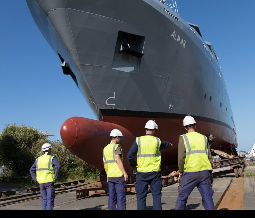
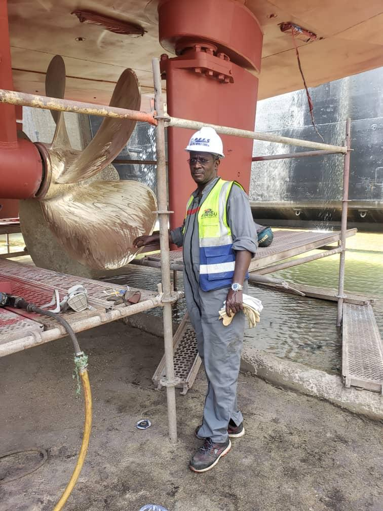

Construction neuve
Navires de pêche, vedettes et unités de servitude construits aux standards Piriou.

Née du partenariat entre le Groupe NGF et le chantier naval français Piriou, Piriou Ngom Sénégal apporte les standards internationaux de la construction navale aux armateurs d'Afrique de l'Ouest.
Les méthodes et le contrôle qualité du groupe Piriou, appliqués à Dakar.
Construction, refit et réparation sans convoyage lointain de vos navires.
L'alliance d'un groupe naval mondial et d'un acteur sénégalais historique.
Un partenariat stratégique entre le chantier français Piriou et le Groupe NGF a donné naissance à une filiale dédiée à la construction et à la réparation navales au Sénégal, un outil industriel au service des flottes de pêche, de servitude et de commerce de la sous-région.
Études, coque, mécanique, mise à l'eau : chaque étape est menée localement, avec l'exigence de qualité qui fait la réputation des chantiers Piriou sur trois continents.

Un savoir-faire naval complet, pour construire, entretenir et moderniser vos unités.
Navires de pêche, vedettes et unités de servitude construits aux standards Piriou.
Remise en état, modernisation et refonte d'unités existantes.
Traitement de coque, peinture marine et protection anticorrosion.
Maintenance moteurs, lignes d'arbre et systèmes embarqués.
Travaux acier, aluminium et tuyauterie industrielle navale.
Plans, calculs et accompagnement réglementaire de vos projets.

Parlons de votre projet : nos équipes chiffrent votre construction, votre refit ou votre carénage.